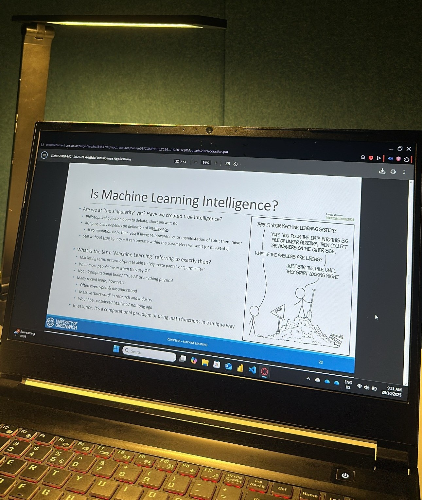
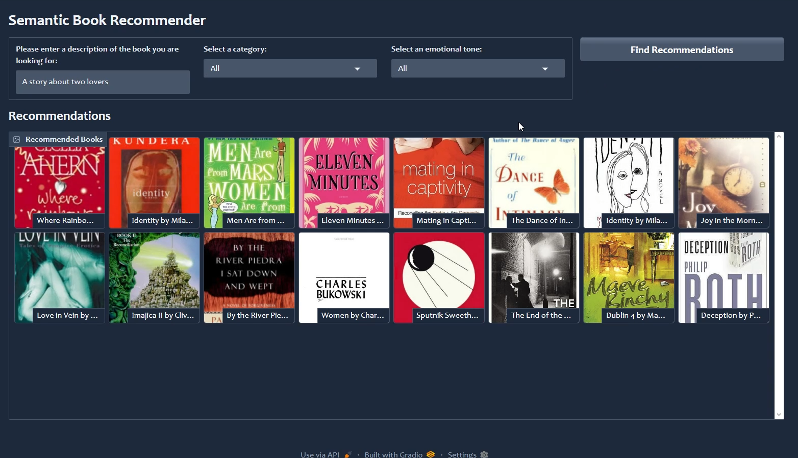
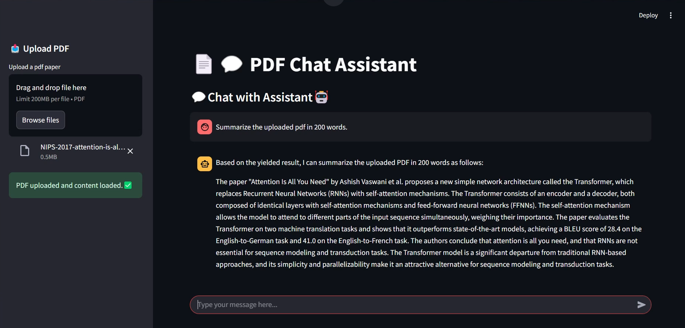
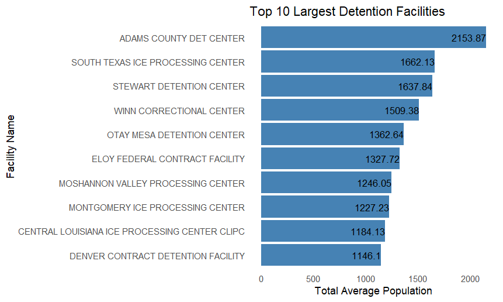

Other Projects
All these projects are listed with their respective github links but you can check my github profile GitHub for other minor projects as well.

UoG Courseworks repo includes all my coursework specifications with reports and notebooks across various course modules that I submitted as part of my Masters assessments. These should be used morally and ethically as a reference rather than plagiarism.
In Car Price Prediction, I developed and deployed a containerized machine learning REST API using FastAPI to serve regression predictions, with authentication and authorization for endpoint access. Integrated Redis for response caching and Prometheus with Grafana for runtime metrics monitoring and visualization. Used Docker to containerize the application and its supporting services, and deployed the API on Render with interactive API documentation.

Since I loved reading books, why not build a recommender that will help me find my next read. Semantic Book Recommender is an intelligent, user-friendly book recommendation system powered by a pretrained text classification LLM model which takes in account about the user's preference for various categories and the emotional relevance they are seeking in a book. The recommendations were displayed through an interactive web application dashboard using gradio.

I built PDF Chat Assistant while doing my Bachelor's when I needed fast and convenient summaries for different lecture PDFs when preparing for board exams. It utilizes Agentic RAG that allows users to chat naturally, ask questions about PDFs (research papers or academic files) while providing the functionality to generate summaries related to that PDF, all in a single interface. I used Groq Llama 3 for LLM responses and built it with: LangGraph, LangChain and LangSmith with Streamlit for frontend deployment.

While taking DataCamp's Transformers course, I came across the revolutionary "Attention Is All You Need" paper from Ashish Veshwani et al. So I decided to try it out by building a simple sequence to sequence translation model, coding the Transformer architecture from scratch.

ICE Detention Analysis was actually a screening task sent to my friend. The tasks were to clean and preprocess the dataset, compute total population per detention facility and finally, identify and visualize the top 10 largest facilities by population. Since it was in R, I decided to give it a shot myself as well.